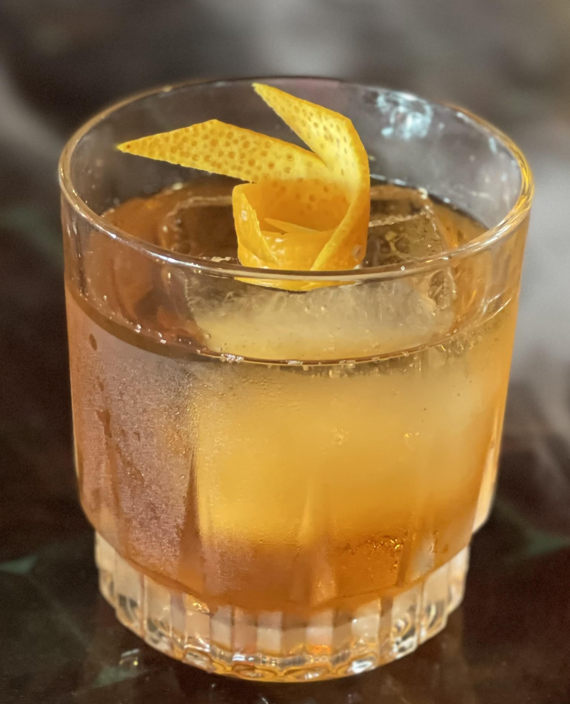

Although its origins are unclear, most bartenders agree that the old fashion is one of the mostwell known classic cocktails that is served today. A couple fingers of Whiskey (Base Spirit) , a bit of Sugar (Sweet), Water - in the form of ice (Dilution), and Bitters (The Seasoning), one sip that could almost bring one right to the bar top prohibition era speak easy. While the recipe has shifted from time to time and still has regional variations, the most commonly used recipe is listed below:

The old fashioned is based on a cocktail that used gin or champagne at its base. Although it is currently most common to order an old fashioned with bourbon as the base, the old fashioned can be ordered with any base spirit and sometimes has a split base of 2 or 3 spirits.
While Demerara Sugar Syrup and Angostura bitters respesctively, are the go to for a house old fashioned these days. A phrase echoed by many experienced bartenders, “There is no accounting for taste.” Rings clear in the old fashioned probably more than any other cocktail.Due to the simplicity of this cocktail, subtle changes stand out and make finetuning your preferred cocktail a fun endeavor rather than a tedious task. There is versatility in the sweet and seasoning used for this cocktail that can change based on many things but typically changes based on the base spirit used.
| Spirit | Sweets | Bitters |
|---|---|---|
| Whiskey : Elijah Craig Old Forester Eagle Rare |
Demerara Cinnamon Maple |
Barrel Aged Angostura |
| Tequila: Arette Siembre Valles El Tesoro |
Cinnamon, Vanilla Prickly Pear |
Orange Chocolate |
| Gin: Fords Monkey 47 Plymouth |
Mint Simple Absinthe |
Lavender Orange |
Last but not least, Dilution. This is a crucial part of the Old Fashioned as it not only chills the drink, but it also dilutes the alcohol level of the drink. This smooths out "sharper" flavors and lets some of the more mellow flavors shine, such as woody barrel notes. The little bit of water that comes from this as the ice melts help to further incorporate the liquids as they are stirred.